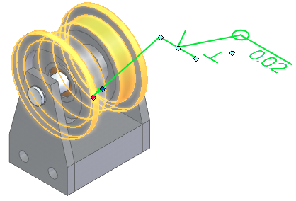
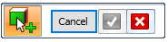
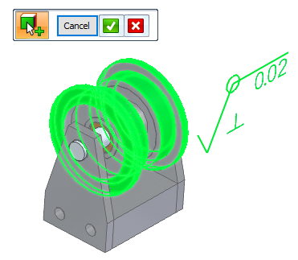

Select multiple reference elements
When placing any PMI annotation on a model, the default mode is for you to select a single element to associate with the annotation. Instead of a single element, you can select multiple faces, edges, or surfaces as the referenced elements.
For example, if the cylindrical faces of a cam shaft require the same ground surface finish, you can use a single surface finish symbol that references all the ground faces. After placement, when the surface finish symbol is selected in the model, all of the referenced faces highlight along with the surface finish symbol.

-
Choose a command from the PMI tab→Annotation group.

-
Enter the information in the Properties dialog box for the type of annotation you selected.
-
On the command bar, select the Referenced Geometry option
 .
.The Select Referenced Geometry command bar is displayed.

-
Click one or more edges, faces, or surfaces as elements to be referenced by the annotation, and then click Accept
 to continue.
to continue.You can use QuickPick to identify and select individual elements.
-
To clear the selection set and return to the hosting command, click Cancel.
-
To empty the selection set so that you can select again, click X
 .
.

-
-
Click one of the reference elements to place the annotation so that the leader attaches to geometry, or click in free space.
-
Press Esc to end the command.
To add or remove reference elements from an existing annotation:
-
Click the PMI annotation on the model or in PathFinder, and then on the edit command bar, click Referenced Geometry
.All of the associated elements are highlighted in the graphics window and the Select Referenced Geometry command bar is reopened.
-
Click elements to add, or Shift+click elements to remove from the selection set.
-
Click Accept to update the selection set and continue.
Note:If you click the X at this point, you clear all of the elements in the selection set, except for the element where the annotation is attached. If you want to exit without making any changes, click Cancel.
-
Press Esc to exit edit mode.
How do I
Display and edit PMI elementsAdd PMI dimensions and annotations
Create PMI dimensions from the assembly level
Place a PMI dimension using an intersection point
Set a PMI dimension and annotation plane
Show custom occurrence properties in PMI
Move PMI elements in 3D
Reposition PMI text, lines, and arrows
Copy PMI elements from a sketch or feature
Add or remove PMI elements in a model view
Learn more
PMI dimensions and annotationsPMI edit handles and cursors
Placing PMI dimensions using intersection points
Look up more details
Lock Plane commandLock Dimension Plane command bar
Move Dimension command
Add To Model View command
Remove From Model View command